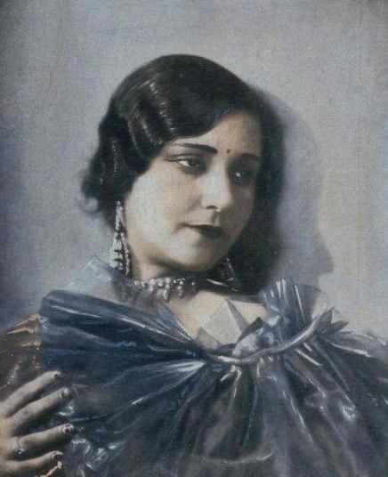

Bollywood History
The success of Prem Sanyas prompted the Great Eastern Film Corporation to expand their activities in the Punjab capital. They selected Syed Imtiaz Mi Taj’s famous play Anarkali as the basis of their second ambitious project, The Loves of a Mughal Prince. Artistes from The Light of Asia, along with Imtiaz Ali Taj, Hakim Ahmed Shuja, and M.S. Dar acted in this venture. It offered a real opportunity for Lahore to enter mainstream cinema. Directed by Charu Roy, the art designer of the Buddha movie, it turned out to be a well-crafted and extravagant undertaking, both in terms of time and money. But the Imperial Film Company of Bombay, sensing the possibility of making good money from such a novel idea, made a quick film based on the same theme and ran it throughout the country before The Loves of a Mughal Prince could be released. As a result, this far superior and original work was looked upon as a copy. When it failed to click, the fate of the Lahore mission was sealed. Himansu Rai settled in Bombay and there, with the support of his highly educated and beautiful actress-wife Devika Rani, established Bombay Talkies.
11 March 1931 will remain as the second most important date in the annals of the region’s history of cinema. On that day Alam Ara, the first full length locally-produced talkie film, was released at the Majestic Cinema, in Bombay. It was made under the banner of the Imperial Film Company owned by Ardeshir Irani and his silent partner, Abdul Ali Yusuf Bhai. Though the film was only partly in sound, it created a great impact at the box office. The public response was overwhelming and for the first time tickets were sold in the black market for as much as twenty rupees for a normal seat otherwise worth a few annas. Alam Ara a.k.a. The Light of the World had top ranking artistes like Master Vithal, Zubeida, Prithivi Raj, Jillo Bai, Yaqub, Jagdish Sethi and W.M. Khan in the cast.
Like Bombay, Calcutta, Madras and Poona, Lahore was also producing a few Urdu and Punjabi films during the pre-independence days. Four full-fledged studios catered to the needs of the regional industry in Lahore till 1947. Of the four studios, one was burnt down during the riots, one was sealed as its owner had migrated to India, and the other two Pancholi No.1 and No2 could not be utilized. Most cinemas and film production and distribution offices had been sealed, as there was nobody to take care of them. There was not a single artiste enjoying star value. Only M. Ismail, Akhtari, Asha Posley and a few others were left to make rounds of the Puncholi(later named as the Punjab Art Studio) in search of work or kill time. With the return of normalcy, cinema houses which had been sealed, were allotted to Muslim refugees in Lahore, Karachi and Dhaka. Indian films were then openly allowed, because there was no local film production.
The restriction on Bombay films opened a new free and non-competitive market for local productions. This period introduced a great variety in the selection of subjects, dealt with by local cinema. Classic films like Jaffer Malik’s Saath Lakh (1957), W.Z. Ahmed’s Wadah (1957), Anwar Kamal Pasha’s Anarkali (1958), Saifuddin Saif’s Kartar Singh (1959), Masud Pervaiz’s Koel (1959), Khurshid Anwar’s Ghoonghat (1962), Khalil Qaiser’s Shaheed (1962), Riaz Shahid’s Susral (1962), S. Suleman’s Baji (1963), and Sharif Nayyar’s Ishq Per Zor Nahin (1963) were all produced during this period. Many Indian artistes including Shiela Ramani and Timir Baran Bhattacharya came to Pakistan to work in Pakistani Films. This period also saw the birth of Bengali and Sindhi cinema in 1956, and marked the addition of Karachi and Dhaka film centers in the country. A.J. Kardar’s Jago Hua Savera (1959) earned Pakistan whatever international prestige it has in the realm of cinema when it won gold medal at Moscow Film Festival.